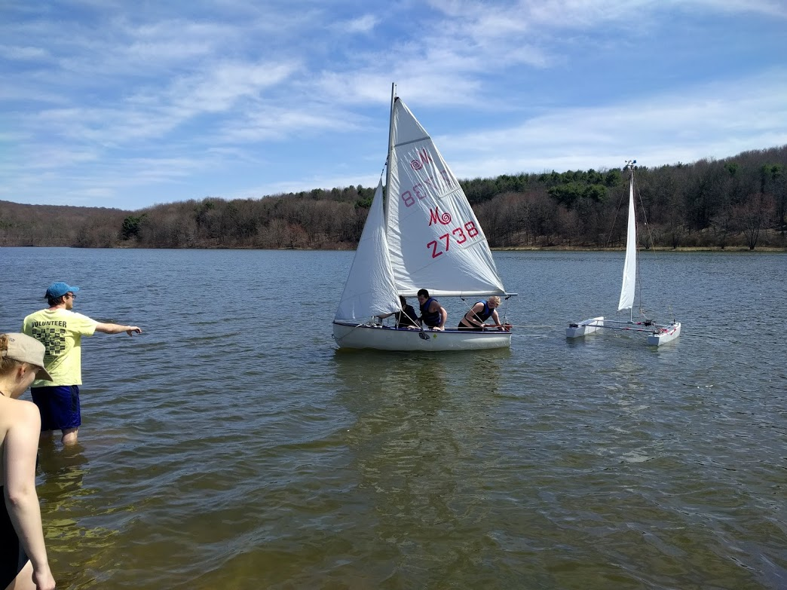

Sophomore Year
Sailbot
The Problem:
The goal of the project was to compete in the International Robotic Sailing Competition (IRSC).
The Solution:
We developed an autonomous catamaran with custom dual 2m long fiberglass hulls and a gaff rig. Unfortunately, we never competed due to poor planning and communication on the behalf of the competition hosts. This project eventually turned into its own club separate from the Robotics and Automation Society which I gave occasional input to. We also created a small landsailer for the software team to work with while we developed the boat. The video below shows our rudder during its first tests.
My Contribution:
I helped convert the Solidworks model of the hulls into a laser cuttable file that we used to create the fiberglass mold. All hands were on deck during the actual layup. I also designed the potentiometer mounts for the chain drive and worked on the landsailer electronics.